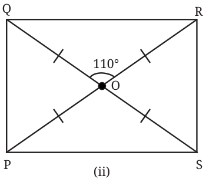
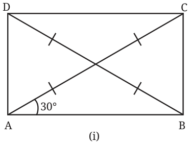
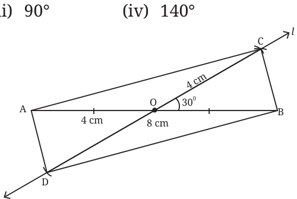
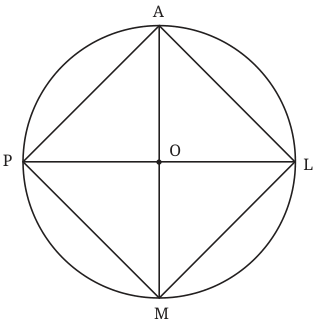
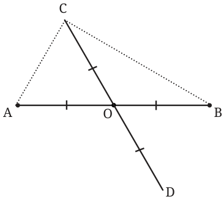

- 1.Find all the other angles inside the following rectangles.


Ans.
- (i)\(\angle ABD = 30 ^{\circ} \angle CAD = 60 ^{\circ} \angle ADB = 60 ^{\circ}\)
\(\angle BDC = 30 ^{\circ} \angle ACD = 30 ^{\circ} \angle ACB = 60 ^{\circ}\)
- (ii)\(\angle POS = 110 ^{\circ} \angle QOP = 70 ^{\circ} \angle ROS = 70 ^{\circ}\)
\(\angle OQR = 35 ^{\circ} \angle ORQ = 35 ^{\circ} \angle OQP = 55 ^{\circ} \angle OPQ = 55 ^{\circ} \angle ORS = 55 ^{\circ} \angle OSR = 55 ^{\circ}\)
- 2.Draw a quadrilateral whose diagonals have equal lengths of 8 cm
that bisect each other, and intersect at an angle of
- (i)\(30 ^{\circ}\) (ii) \(40 ^{\circ}\)

Ans . (i) \(30 ^{\circ}\)
Lengths of diagonals \(= 8\) cm. Draw a line segment \(AB = 8\) cm. Take midpoint O on AB Draw an angle \(30 ^{\circ}\) at O on OB From O draw an arc on the line l such that \(OC = OD = 4\) cm Join AD, DB, BC & AC ADBC is the required quadrilateral.
- (ii)\(40 ^{\circ}\) , (iii) \(90 ^{\circ}\) , (iv) \(140 ^{\circ}\) , all can be drawn with the same
process as in (i).
- 3.Consider a circle with centre O. Line segments PL and AM are two
perpendicular diameters of the circle. What is the figure APML? Reason and/or experiment to figure this out.

Ans. APML is a square.
- 4.We have seen how to get \(90 ^{\circ}\) using paper folding. Now, suppose we
do not have any paper but two sticks of equal length, and a thread. How do we make an exact \(90 ^{\circ}\) using these? Ans. Let AB and CD be the equal sticks. Put them together as shown in the figure such that their midpoints coincide at O. Now fix one end of the thread at A, pass it through C, and extend it to B, as shown in the figure. ACBD is a rectangle since their diagonals are equal and bisect each other. Hence \(\angle C = 90 ^{\circ}\) . There are other ways to get \(90 ^{\circ}\) . One is by using the properties of an isosceles triangle. Try it out!

- 5.We saw that one of the properties of a rectangle is that its opposite
sides are parallel. Can this be chosen as a definition of a rectangle? In other words, is every quadrilateral that has opposite sides parallel and equal, a rectangle? Ans. No, this cannot be taken as a definition of a rectangle.